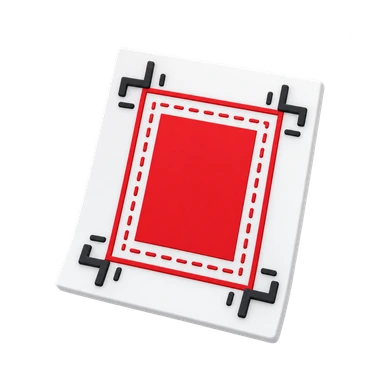
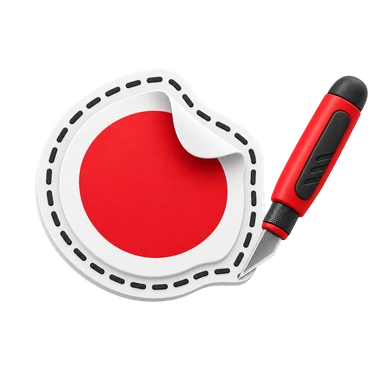
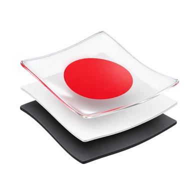

Файлы, шрифты и цвет
PDF для печати, вектор для резки и гравировки. После экспорта проверяем страницы, шрифты, прозрачности и тонкие линии. Для белил и прозрачных материалов рабочие слои должны быть однозначно разделены.
Для документов, чертежей, полиграфии и изделий с резкой. Найдите свою услугу и проверьте файл перед отправкой.

Размерготовый + вылет
Контуротдельный вектор
Белилаотдельный слойОбщие правила не заменяют чек-лист конкретной услуги.
PDF для печати, вектор для резки и гравировки. После экспорта проверяем страницы, шрифты, прозрачности и тонкие линии. Для белил и прозрачных материалов рабочие слои должны быть однозначно разделены.
Готовый размер — после резки. Фон продолжается за линию реза, а текст и QR-коды остаются внутри безопасного поля. Для листовок установлены вылеты 4 мм.
Контур — отдельный замкнутый вектор без дублей и самопересечений. Размер изделия задаётся по внешней линии реза; вылет добавляется снаружи.
Цветное изображение, белая подложка, прозрачные зоны и рез должны быть различимы. На прозрачном материале «белое» в картинке не равно команде печатать белилами.
Для точного масштаба — 100% / фактический размер и контрольный размер в макете. Режим «вписать» может изменить геометрию.
Линии сгиба и сторона переплёта задаются в технической схеме, а не печатным пунктиром. Для многостраничных работ передавайте страницы по порядку.
Размер, материал, место использования и дистанция просмотра влияют на подготовку. Для баннеров и холста обработка краёв задаётся отдельно.
Печать привязывается к готовой заготовке. Материал, толщина, белила, отверстия и сторона печати должны быть согласованы до запуска.
Вектор 1:1, замкнутые траектории, шрифты в кривых. Резка, гравировка и служебные размеры разделяются. Для пазов нужен тест на фактическом материале.
Один ряд таблицы — одно изделие. Сохраняйте ведущие нули, добавляйте ID и показывайте превью длинных значений и крайних номеров.
Выберите направление или найдите услугу
Что передатьPDF в окончательной редакции и список параметров печати.
Предпочтительно PDF с корректным размером страницы; Word/Excel — только если нужен именно редактируемый исходник и после контрольного согласования.
Проверяем число страниц, формат листа, ориентацию, цветные страницы и отсутствие случайных комментариев/правок.
21 страница × 2 комплекта, двусторонняя печать — 22 физических листа.
Что передатьОригиналы и ведомость копирования.
Оригиналы + короткая ведомость: формат, цветность, количество комплектов, односторонне/двусторонне, можно ли расшивать.
Перед копированием сверяем комплектность оригиналов, порядок и выбранный способ подачи.
Пять двусторонних оригиналов — десять копируемых сторон на комплект.
Что передатьИсходная фотография и перечень размеров.
JPG/TIFF/PDF из исходного файла; для обычной фотопечати ориентир — около 300 ppi в готовом размере.
Проверяем пиксельные размеры, кадрирование, ориентацию и то, что важные детали не уходят под обрез.
Фото 3:2 для квадрата потребует обрезки боков или добавления полей.
Что передатьГотовые листы и описание ламинирования.
Готовое изделие или финальный печатный файл; отдельно укажите формат, количество и выбранный пакет ламинации.
Проверяем формат пакета, состояние листа и возможность сохранить герметичную кромку.
Для карточки сначала согласуйте готовый размер с кромкой пакета.
Что передатьСкомплектованный блок или PDF и описание обложек.
Последовательный PDF + сведения об обложках; страницы идут 1, 2, 3… без самостоятельных разворотов.
Перед пробивкой проверяем сторону пружины, толщину блока, обложки и внутреннее поле.
У альбома A3 с пружиной по короткой стороне это явно указано в заказе.
Что передатьФинальный PDF или готовая печать A4.
Финальный PDF A4 или готовый напечатанный блок; максимум 300 листов.
Перед переплётом пересчитываем физические листы и проверяем порядок от титула до приложений.
240 страниц с одной стороны — 240 листов; с двух сторон — 120 листов.
Что передатьОригиналы до A3 и описание файлов результата.
Оригиналы до A3 + желаемый формат результата: один PDF, отдельные файлы или другое согласованное деление.
Проверяем формат оригиналов, порядок, обороты и требуемую структуру цифрового результата.
Десять листов в один PDF и десять отдельных PDF — разные задания.
Что передатьЧёрно-белый макет 58 × 40 мм и данные кодов.
Чёрно-белый макет 58×40 мм; для переменных данных — таблица с одной строкой на одну этикетку/позицию.
Печатаем пробу и проверяем считывание кода тем типом сканера, которым он будет использоваться.
Значение 001234 нужно сохранить как текст, чтобы нули не исчезли.
Что передатьПоследовательный PDF A5 и описание обложки.
Последовательный PDF A5, двусторонний; обложку лучше передавать отдельным файлом, если она отличается по материалу.
Проверяем кратность полос, ориентацию оборотов, обложку и порядок страниц.
Блок 28 полос и отдельная обложка должны быть обозначены раздельно.
Что передатьPDF чертежей и ведомость файлов.
PDF по листам + ведомость: имя файла, формат, цветность, масштаб, количество экземпляров.
Контроль: размер страницы PDF, масштаб, штамп, читаемость линий и соответствие ведомости.
Ведомость: plan_01.pdf — A1 — 1:100 — цвет — 2 экземпляра.
Что передатьКомплект листов и ведомость сборки.
Комплект листов/файлов + ведомость тома, порядок, формат готового блока и тип пружины.
Перед сборкой проверяем последовательность листов, сторону переплёта, формат после фальцовки и число комплектов.
Листы A1 складываются по согласованной схеме для подшивки в том A4.
Что передатьЧертежи и согласованная схема складывания.
Чертежи + указание применяемой схемы/ГОСТ, конечного формата и необходимости полосы для подшивки.
Проверяем формат исходника, конечный размер, положение штампа и сторону подшивки.
Для архива без подшивки и для тома на пружине схемы могут отличаться.
Что передатьОригиналы чертежей не больше A3.
Оригиналы до A3 + ведомость именования/цветности; при масштабе 1:1 укажите контрольный размер.
Сверяем весь лист целиком, особенно рамку, штамп и контрольный размер.
Бумажный оригинал A1 не относится к стандартному сканированию до A3.
Что передатьОригинал либо согласованный цифровой файл и ведомость.
Оригинал или цифровой файл + формат результата, коэффициент масштаба и количество копий.
Проверяем масштаб по известному размеру после первой копии.
Увеличение A3 до A1 меняет масштаб; его нужно указать, а не подразумевать.
Что передатьPDF альбома A3 или A4 по порядку чтения.
PDF альбома A3/A4 по порядку чтения; обложка/разделители — отдельными страницами или файлами.
Перед тиражом проверяем один типовой лист с мелким текстом и одну визуализацию.
Переход с A3 на A4 уменьшает текст; проверьте один лист до всего альбома.
Что передатьPDF 1:1 с контрольным квадратом или размером.
PDF 1:1, ширина до 841 мм и длина до 18 000 мм; обязательный контрольный размер/квадрат.
После первой печати измеряем контрольный размер линейкой по двум направлениям.
Квадрат 100 × 100 мм после печати измеряется линейкой по обеим сторонам.
Что передатьPDF с лицом и оборотом отдельными страницами.
PDF 1:1; лицо и оборот отдельными страницами одинакового размера. Текст/логотипы — вектор по возможности.
Перед печатью сверяем стороны, ориентацию, контакты, вылеты и безопасное поле.
Размер готовой визитки и размер файла с вылетами запишите раздельно.
Что передатьPDF с вылетами 4 мм по периметру.
PDF 1:1; установленные вылеты ТЕКСТ — 4 мм с каждой стороны. Растровые изображения — около 300 ppi в готовом размере.
Проверяем финальный формат, 4-мм вылеты, стороны и плотность бумаги.
Для A5 148 × 210 мм файл с вылетами имеет размер 156 × 218 мм.
Что передатьPDF развёрнутого буклета и схема складывания.
PDF развёрнутого буклета 1:1; каждая сторона — отдельная страница. Схема сгибов прикладывается отдельно.
Проверяем порядок панелей на бумажном макете, направление складывания и расстояние текста от сгибов.
Для намотки внутренняя панель обычно уже; делить ширину на три вслепую нельзя.
Что передатьПоследовательный PDF блока и файл обложки при необходимости.
Последовательный PDF страниц + отдельная обложка при необходимости; без самостоятельного спуска и «ложных» разворотов.
Проверяем порядок страниц, число полос, обложку, способ скрепления и внутренние поля.
Брошюра на скобе на 20 полос содержит пять сложенных двусторонних листов.
Что передатьPDF каталога по страницам и спецификация блока.
PDF страниц по порядку + отдельно обложка/вставки, если они отличаются материалом.
До тиража проверяем обложку, один типовой разворот и самый насыщенный по графике лист.
Для каталога на пружине проверьте внутренний край каждой чётной страницы.
Что передатьPDF открытки и схема лицевой и внутренней сторон.
PDF в развёрнутом размере; для открытки со сгибом — отдельная схема направления сгиба и ориентации внутренних сторон.
Проверяем развёрнутый размер, биговку, порядок сторон и ориентацию после складывания.
У открытки с вертикальным открыванием верх внутреннего текста проверяют отдельно.
Что передатьPDF образца и таблица персонализации при необходимости.
PDF образца + XLSX/CSV при персонализации; одна строка таблицы — одна грамота/диплом.
Формируем тест с крайними значениями и сверяем его с исходной таблицей.
Проверьте образец с двойной фамилией и длинным названием номинации.
Что передатьPDF сертификата и таблица номеров или кодов.
PDF шаблона + таблица номеров/номиналов/кодов при персонализации.
Перед тиражом печатаем тестовый сертификат с самым длинным значением и кодом.
Серия 0001–0100 содержит 100 номеров; ведущие нули должны сохраниться.
Что передатьPDF афиши в согласованном размере.
PDF/JPG/TIFF в конечном размере; для близкого просмотра ориентир по растру 150–300 ppi в зависимости от размера.
Проверяем читаемость ключевого текста и кадрирование в реальном масштабе.
Для афиши в рамке важный текст не должен уходить под её внутренний край.
Что передатьPDF бирки, векторный контур и схема отверстия.
PDF + векторный контур бирки и отдельная размерная схема отверстия.
Сверяем контур, отверстие, ориентацию лица/оборота и выбранное крепление.
Подпись «отверстие сверху» замените размерной схемой с диаметром и отступом.
Что передатьПечатный макет и отдельный замкнутый контур.
Вектор предпочтителен; если печатная часть растровая — около 300 ppi. Контур реза всегда отдельный замкнутый вектор 1:1.
Контур просматриваем в режиме каркаса: одна траектория, без лишних точек и случайных отрезков.
Для сложного логотипа допустим согласованный общий контур вокруг композиции.
Что передатьМакет с круглым контуром в конечном диаметре.
Векторный круг в готовом диаметре + печатная графика; вылет находится снаружи линии реза.
Проверяем диаметр, центрирование и равномерность канта по кругу.
Ø 50 мм означает готовую наклейку; вылет находится снаружи этого круга.
Что передатьМакет прямоугольной наклейки и контур при скруглениях.
Макет 1:1; прямоугольный контур отдельно, если есть скругления — радиус задаётся вектором.
Проверяем геометрию углов, ориентацию наклейки и безопасное поле.
80 × 40 мм с радиусом углов требует явного значения радиуса в шаблоне.
Что передатьМакет листа, контуры всех стикеров и внешний габарит.
Один файл листа/пака + отдельные замкнутые контуры каждого стикера; внешний размер пака задан отдельно.
Проверяем каждый контур отдельно и общую композицию пака перед тиражом.
Пять стикеров на одном листе × 100 пакетов — 500 отдельных элементов.
Что передатьМакет плёночной этикетки с контуром.
Макет плёночной этикетки 1:1; для фигурной формы — отдельный векторный контур, для прозрачной плёнки — отдельная схема белил.
Перед серией проверяем пробную этикетку на реальной банке/бутылке/упаковке.
Для прозрачной бутылки оцените этикетку на наполненной упаковке.
Что передатьВектор или качественный растр с прозрачным фоном.
PNG/PDF/AI с прозрачностью; белый фон не должен быть «нарисован» вместо прозрачной области.
Для новой поверхности делаем тест переноса и проверяем сцепление после снятия транспортной плёнки.
Логотип из раздельных букв передайте с общим превью расположения.
Для UV DTF особенно важно не «рисовать прозрачность» шахматной сеткой. Передавайте реальную прозрачность и общий вид композиции.
Что передатьОдин макет каждого дизайна и количества по вариантам.
Один макет дизайна + векторный контур при резке; раскладку на SRA3 выполняет производство.
Проверяем режим резки и считаем реальное количество изделий по рабочей области листа.
Количество на SRA3 определяется рабочей областью и раскладкой, а не только форматом наклейки.
Что передатьПечатный макет и плавный замкнутый внешний контур.
Печатный макет + плавный замкнутый внешний контур; основа белая или прозрачная.
До серии согласовываем один образец, особенно если форма сложная или очень мелкая.
Длинный тонкий луч можно заменить общим округлым силуэтом вокруг логотипа.
Для объёмной заливки плавный внешний силуэт технологичнее острых лучей, узких шеек и глубоких внутренних выемок.
Что передатьМакет круглого 3D-стикера в заданном диаметре.
Круглый макет в точном диаметре; основа белая/прозрачная выбирается до подготовки белил.
Проверяем диаметр на изделии и внешний вид одного залитого образца.
Для небольшой выпуклой крышки сначала проверьте, как держится выбранный диаметр.
Что передатьМакет основания и согласованный контур углов.
Макет основания 1:1 + согласованный контур углов; для прямоугольника радиусы лучше задавать явно.
Проверяем форму углов и пробный образец до запуска тиража.
Прямоугольный макет не означает, что острые углы автоматически подходят для смолы.
Что передатьМакет пакета и файлы каждого объёмного элемента.
Макет подложки + отдельные файлы/контуры каждого 3D-элемента и количество элементов в паке.
Сначала подтверждаем один полностью собранный пак, затем повторяем его в тираже.
Три формы в одном пакете требуют проверки заливки каждой формы.
В одном 3D-стикерпаке проверяется не только общий размер подложки, но и пригодность к заливке каждого отдельного элемента.
Что передатьPDF баннера и схема обработки краёв.
PDF/TIFF/JPG 1:1 или согласованный масштаб 1:10; масштаб обязательно пишется в задании.
Сверяем итоговый размер, обработку краёв, материал и расстояние просмотра.
Баннер 3000 × 1000 мм в масштабе 1:10 имеет основу макета 300 × 100 мм.
Что передатьPDF или качественное изображение постера.
PDF/JPG/TIFF в готовом размере; для близкого просмотра используйте качественный исходник и проверяйте пиксели.
Печатаем контрольный фрагмент, если критичны детализация или фирменный цвет.
Постер 500 × 700 мм требует проверки исходника именно для этого размера.
Что передатьPDF плаката с окончательным текстом.
PDF в финальном размере; крупные заголовки — вектор/текст, изображения — с достаточным итоговым разрешением.
Проверяем читаемость с целевой дистанции и качество главного изображения.
Плакат на двери и плакат под стеклом могут требовать разных материалов.
Что передатьИзображение, размер лицевой части и данные подрамника.
Качественное изображение + размер лицевой части; схема боковин и подрамника при натяжке.
Перед печатью показываем превью лица и всех четырёх боковин.
Файл для лица W × H с припуском b имеет размер (W + 2b) × (H + 2b).
Если нужен заворот изображения на боковины, размер макета увеличивается на двойной припуск по каждой оси. Например, при припуске 25 мм с каждой стороны лицо 300 × 400 мм превращается в макет 350 × 450 мм. Сам припуск подтверждаем после выбора подрамника.
Что передатьПечатный макет и контур при необходимости.
PDF/TIFF/AI в конечном размере; для фигурной резки — отдельный векторный контур.
Проверяем материал, сторону нанесения, схему панелей и условия эксплуатации.
Для двух панелей на витрине обозначьте левую, правую и общий верх.
Что передатьВекторный макет аппликации и схема размещения на авто.
Чистый вектор аппликации 1:1 + фото/схема места на автомобиле с реальными размерами.
Перед резкой проверяем макет на фото автомобиля и фактический размер зоны монтажа.
Надпись для двери измеряют по свободной плоскости, а не по всей ширине двери.
Что передатьВекторный макет аппликации и схема стороны монтажа.
Вектор 1:1 + схема витрины/стекла: размеры секций, сторона монтажа и направление чтения.
Сверяем каждую секцию, верх/низ и направление чтения до резки.
Надпись для чтения с улицы при монтаже изнутри требует отдельной проверки зеркальности.
Что передатьМакет печати и размерная схема панели.
Макет печати + размерная схема ПВХ: готовый габарит, толщина, отверстия/фигурный край.
Проверяем размер основы, толщину, ориентацию изображения и все отверстия.
Отверстия показывают с диаметрами и координатами центров от краёв панели.
Что передатьМакет печати и схема основы из пенокартона.
Макет печати + размер панели из пенокартона, толщина и способ размещения.
Перед запуском согласуем крепление, ориентацию и внешний вид торца.
Для интерьерной экспозиции заранее согласуйте крепление, чтобы не повредить кромку.
Что передатьПечатный макет, белая подложка и чертёж заготовки.
PDF/AI 1:1 + чертёж заготовки; цвет, WHITE и прозрачные зоны разнесены по понятным слоям.
Сверяем материал, толщину, сторону печати, белила и чертёж заготовки.
ПЭТ 1 мм и акрил 3 мм — разные заготовки; укажите материал вместе с толщиной.
Что передатьЧистый вектор 1:1 и цвет плёнки.
Чистый вектор 1:1; шрифты в кривых; одна траектория на один рез. Монтажная плёнка Oratape — по умолчанию.
Открываем макет в каркасе и оцениваем выборку самых мелких внутренних элементов.
Минимальное поле 200 × 200 мм не означает минимальную высоту буквы 200 мм.
Что передатьВектор 1:1, материал, толщина и число деталей.
Вектор 1:1; рез и гравировка — разными слоями/цветами. Материал и толщина указываются в заказе.
Перед серией проверяем материал, замкнутые контуры, габарит и пробную посадку пазов.
Паз под материал 3 мм подтверждают пробой на фактической партии материала.
Номинальное поле Wattsan 6090 LT не означает, что любая деталь 600 × 900 мм автоматически проходит без технологических отступов.
Что передатьМакет гравировки и описание области обработки.
Вектор или контрастный растр 1:1; отдельно укажите прямоугольную область гравировки и процент фактического заполнения.
На новом материале согласовываем образец глубины, контраста и внешнего вида.
1800 мм² рисунка в области 100 × 60 мм соответствуют заполнению 30 %.
Процент заполнения — доля реальной гравировки внутри выбранной зоны, а не мощность лазера.
Что передатьПечатный макет и размерный чертёж таблички.
Печатный макет 1:1 + чертёж готовой таблички с размерами и отверстиями.
Сверяем габарит, материал, отверстия, сторону печати и способ крепления.
Схема «два отверстия» должна содержать расстояния между их центрами.
Что передатьКонтур брелока, печать или гравировка и схема фурнитуры.
Контур 1:1 + печатный макет/гравировка + схема отверстия и фурнитуры.
Перед серией проверяем один брелок с реальной фурнитурой.
Положение кольца не должно перекрывать надпись и ослаблять узкую перемычку.
Что передатьМакет 1:1, материал и таблица маркировок.
Макет 1:1 + таблица маркировок + схема отверстий. Материал: алюминий/AISI 0,5/0,8/1,0 или двухслойный пластик 1,5 мм.
Перед производством делаем контрольную выгрузку переменных данных и сверяем один физический образец.
Таблица серийных номеров должна однозначно задавать каждую готовую пластину.
Что передатьМакет готовой металлической пластины и описание заготовки.
Макет готовой металлической пластины 1:1 + материал/толщина + схема отверстий и крепления.
Сверяем материал, толщину, готовый габарит, отверстия и сторону печати.
Материал «AISI 0,8 мм» укажите в спецификации, а не только в переписке.
Эта страница — про готовую металлическую пластину/шильд. Печать на принесённом металлическом изделии здесь не обещаем.
Что передатьМакет номерка, таблица номеров и схема отверстия.
Макет номерка 1:1 + таблица номеров/парности + размерная схема отверстия.
Генерируем тест начала/середины/конца диапазона и сверяем комплектность.
Диапазон 001–100 по две одинаковые детали — 100 пар и 200 изделий.
Попробуйте другое название или вернитесь ко всем направлениям.
Для стабильной печати лучше присылать PDF. Проверьте порядок страниц, ориентацию, поля и цветные страницы. Если файл требует правок, сначала согласуем макет.
В PDF проверьте формат листов, ориентацию и масштаб. Для лекал и выкроек нужен натуральный масштаб и контрольный размер или квадрат для его проверки.
Для фигурных наклеек контур резки готовится отдельно. В стикерпаке он нужен для каждого элемента. Учтите безопасные поля и технологические расстояния.
Заранее согласуйте белые элементы и белую подложку. Для фигурных наклеек на голографической плёнке работа белого цвета также согласуется до запуска.
Оригиналы должны быть читаемыми и пригодными для сканирования. Для чертежей максимальный формат — А3. Если важен порядок страниц, согласуйте его заранее.
Пришлите файл и параметры заказа на tekkkst@yandex.ru. Передать макет можно через форму заявки на сайте или вместе с заказом из корзины. Укажите услугу, размер, материал и тираж; дождитесь согласования студии.